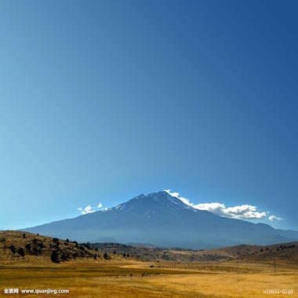
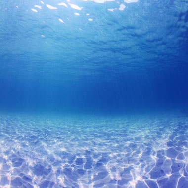

青空
青空（あおぞら）は、晴れた日中の空を指し、転じて「青空市場」「青空教室」のように屋根が無い、戸外、野外などを意味する
陸地
陸（りく、おか）とは、地球では、地表の恒常的に水で覆われていない部分、あるいは固体の水（氷雪）に覆われているが、その直下に液体の水が恒常的に存在しない部分をいう

海洋
海（うみ）は、地球の陸地以外の部分で、塩水に満ちているところのことである。
青空 SKY
青空（あおぞら）は、晴れた日中の空を指し、転じて「青空市場」「青空教室」のように屋根が無い、戸外、野外などを意味する。 詳細は「空」を参照.「蒼空」「蒼穹」「碧空」などと表記し「あおぞら」と読むものについては関連項目を参照のこと。
陸地 LAND
陸には、硯の墨をする部分や、銭湯などの流し場の意味も持つ。また、「陸へ上がった河童」といえば、普段と勝手が違い、本領が発揮できないことの形容である。「陸の孤島」とは、陸続きではあるが、交通の便などの問題から、孤立している場所（鉄道空白地帯など）を指す。数字の6の大字も「陸」である。「くが」と読めば雅語になるが、意味は一緒である。陸上自衛隊や陸奥の国の略称として用いられることもある。人名としても用いられる（恩田陸など）。
海洋 SEA
海は地表の70.8%を占め、これらは全てつながっている。他にも、地表のごく小さい面積が塩水や淡水で覆われるが、これらは海には含めない。海の面積は約3億6106万km2で、陸地の面積の約1億4889万km2と対比すると、2.42倍である。平均的な深さは3729m。海水の総量は約13億4993万立方キロメートルにのぼる